Formulare scannen, ausfüllen und übersetzen — auf dem eigenen Gerät
Kostenlos, ohne Konto. Die Dokumente bleiben auf dem Gerät. Das Video zeigt in knapp vier Minuten, wie es geht.
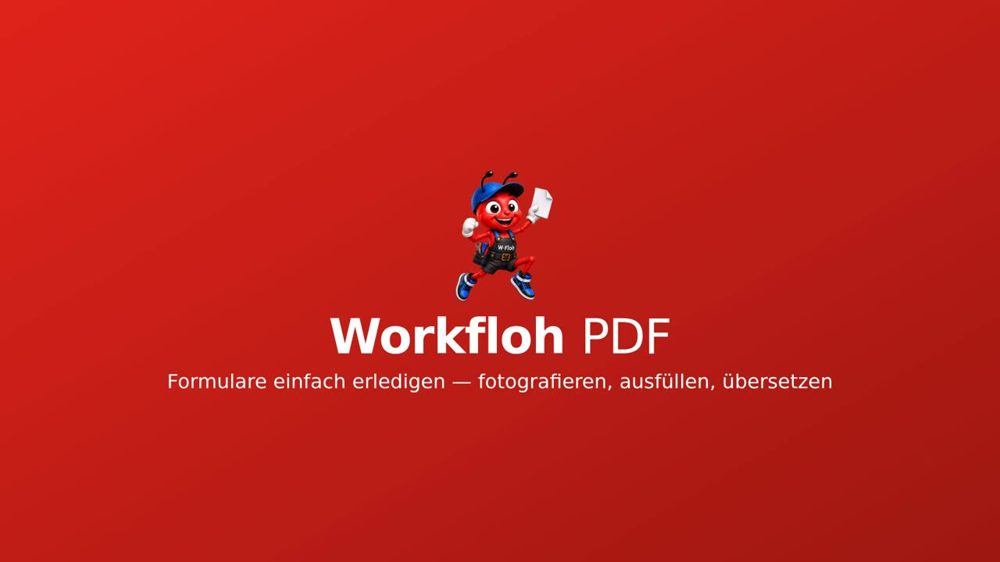
3:39🛡 Versteckte Befehle erkennen
Der kurze Film nach dem Erklärvideo: Workfloh PDF prüft jede Datei schon beim Einlesen — unsichtbaren Text im PDF, blasse Schrift im Foto und Botschaften in den Bildpunkten. Was es findet, wird rot markiert, nicht gelöscht.
Das ganze Video hochkant
Dasselbe Video, aufgenommen im Handy-Hochformat — so, wie die App meist in der Hand benutzt wird.
⬇ Video herunterladenWas Workfloh PDF kann
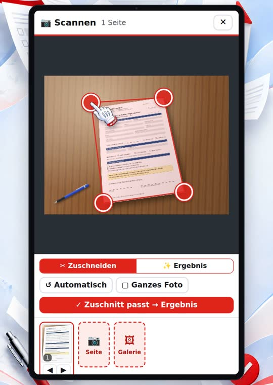
📷 Scannen
Foto machen — das Blatt wird gefunden, gerade gezogen und aufgehellt. Mehrere Seiten werden ein PDF, auf Wunsch durchsuchbar.
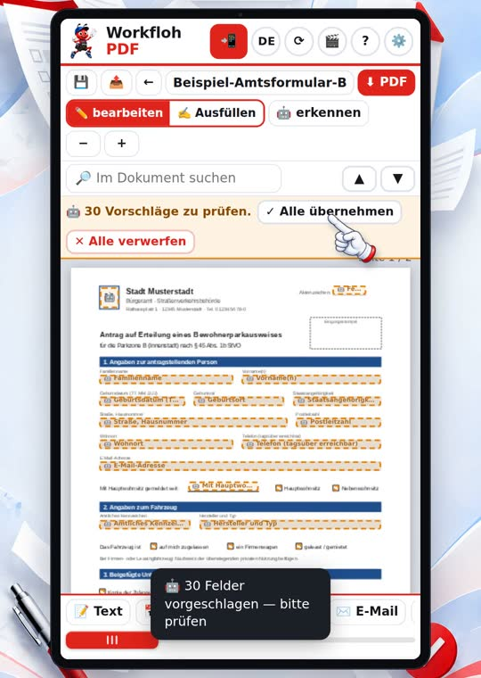
🧩 Felder erkennen
Linien, Kästchen und graue Flächen werden zu Feldern — ohne Internet. Fehlt eines, setzen Sie es selbst.
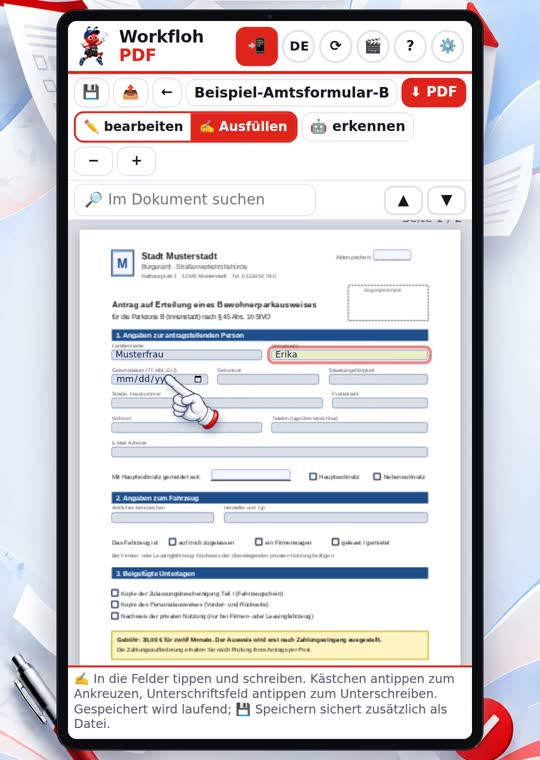
✍️ Ausfüllen
Tippen, ankreuzen, Datum aus dem Kalender, unterschreiben. E-Mail, Telefon und Internetadressen werden zu Links.
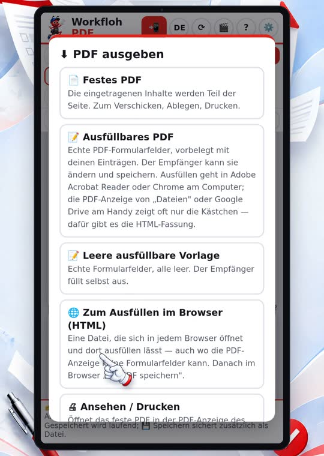
📤 Ausgeben & Teilen
Als festes PDF, als ausfüllbares PDF, als leere Vorlage oder als Webseite — teilen, herunterladen oder drucken.
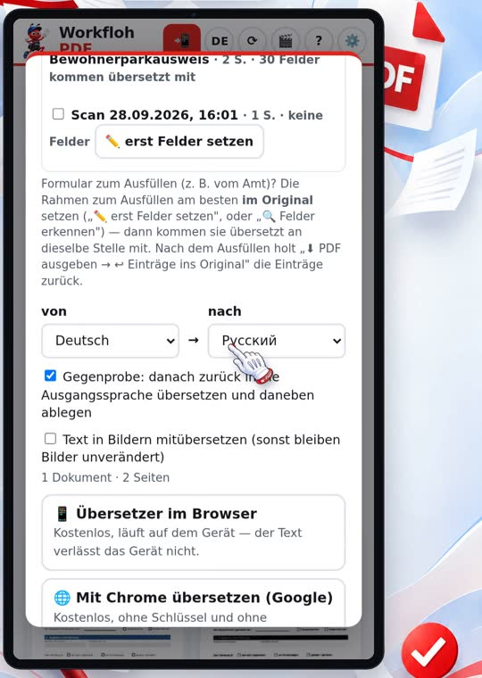
🌐 Übersetzen
Deutsch, Englisch, Russisch: der Text kommt an dieselbe Stelle der Seite, Bilder und Farben bleiben. Große Dokumente gehen in Teilen.
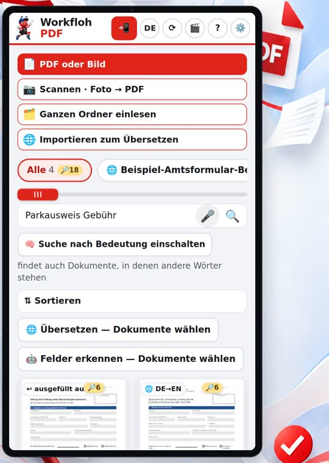
🔎 Suchen
Findet Wörter im Namen, in den Feldern und im Text der Seiten und zeigt die Fundstelle. Auf Wunsch auch nach Bedeutung und per Spracheingabe.
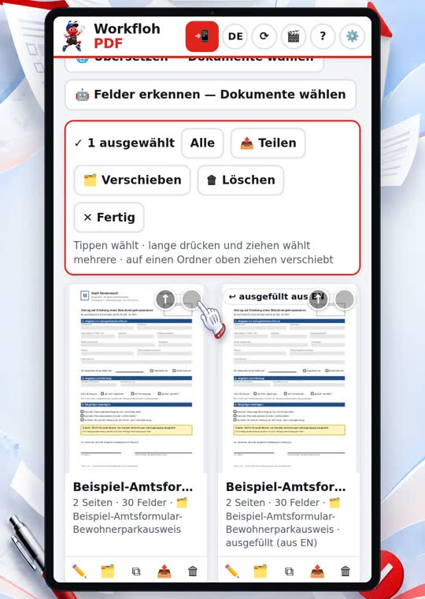
🗂️ Ordnen
Ordner, Sortieren nach Name, Datum, Größe oder Seitenzahl. Mehrere auswählen, auf einen Ordner ziehen, einen ganzen Ordner als ZIP oder als ein PDF ausgeben.
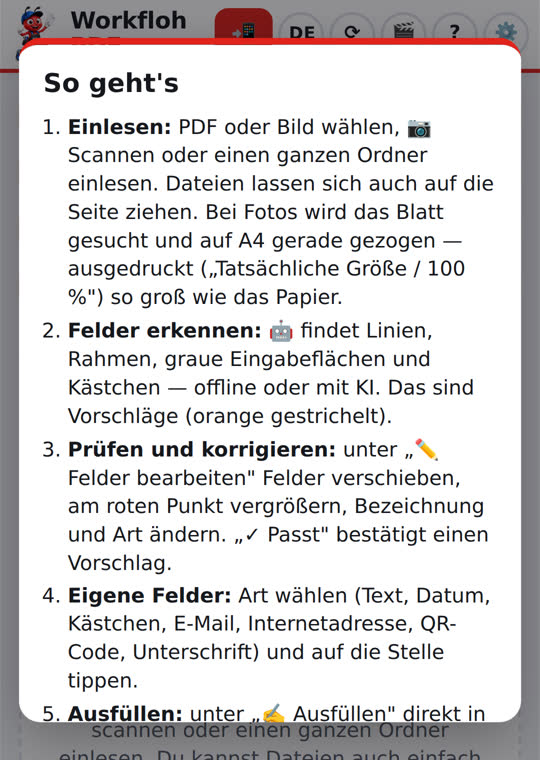
📘 Hilfe an Bord
Handbuch, Erklärvideo und ein erfundenes Beispiel-Formular zum Ausprobieren — ganz ohne eigene Daten.
So greift alles ineinander
- Einlesen — PDF, Foto oder ein ganzer Ordner
- Felder — erkennen lassen oder selbst setzen
- Ausfüllen — am Tablet auch mit dem Finger
- Ausgeben — teilen, drucken, ablegen
- Wiederfinden — Suche und Ordner
Übersetzen passt an jeder Stelle hinein: ein fremdsprachiges Formular übersetzen, in der eigenen Sprache ausfüllen — und die Einträge wandern zurück ins Original.
Gut zu wissen
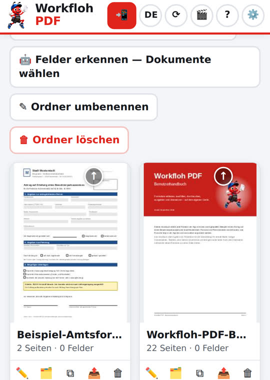
🔒 Bleibt auf dem Gerät
Ihre Dokumente werden nicht hochgeladen. Kein Konto, keine Anmeldung.
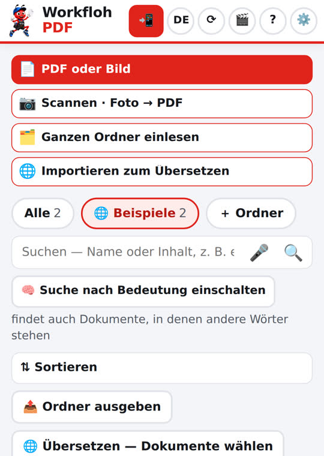
📶 Läuft ohne Internet
Nach dem ersten Öffnen offline nutzbar und wie eine App installierbar.
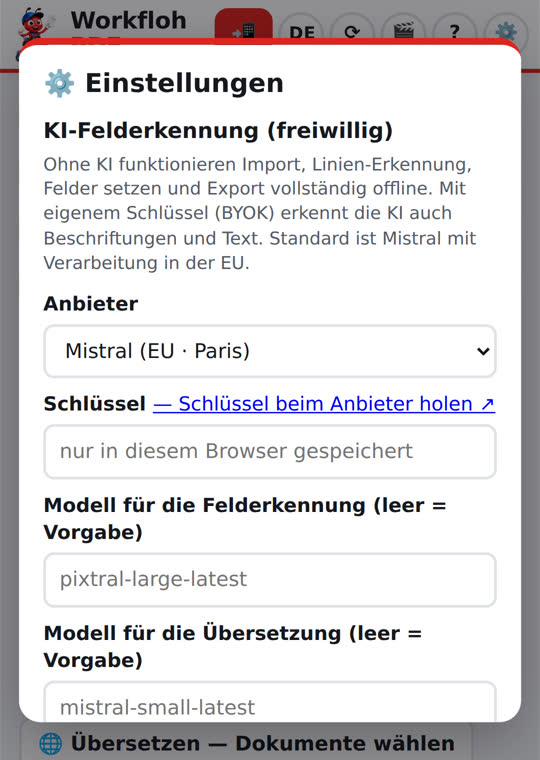
🤖 KI nur, wenn Sie wollen
Mit eigenem Schlüssel und erst nach Ihrer Bestätigung. Vorgabe: Mistral (EU).
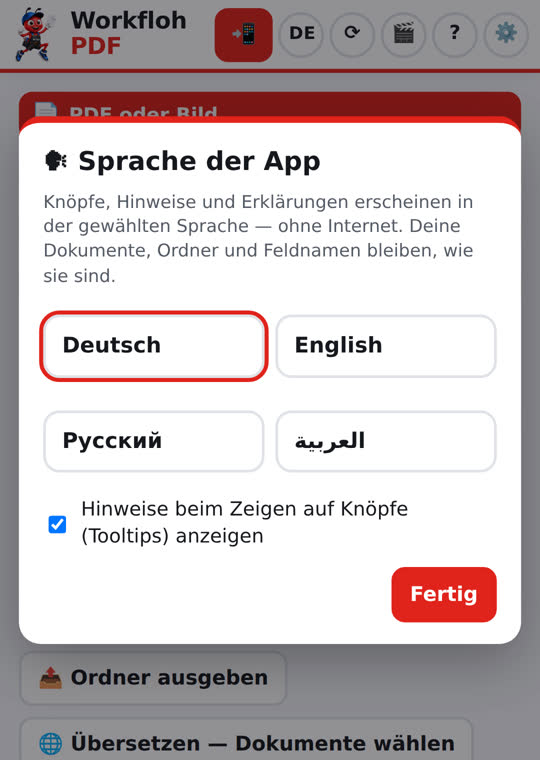
🗣 Vier Sprachen
Die Oberfläche spricht Deutsch, English, Русский und العربية.
Tipp: Dokumente am besten im Chrome-Browser übersetzen
Chromes eingebauter Übersetzer hat bei Dokumenten gute Ergebnisse geliefert. Die App bietet dafür den Weg „Mit Chrome übersetzen" an.